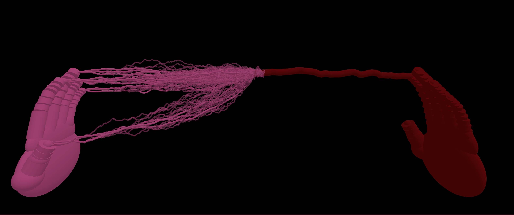
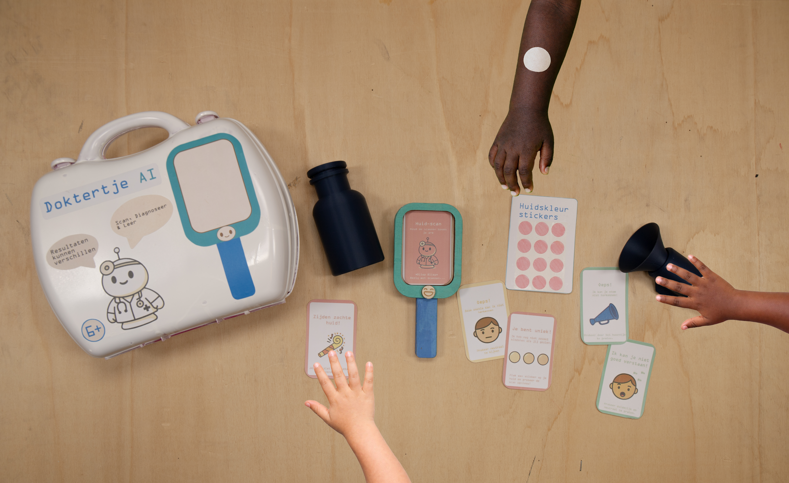
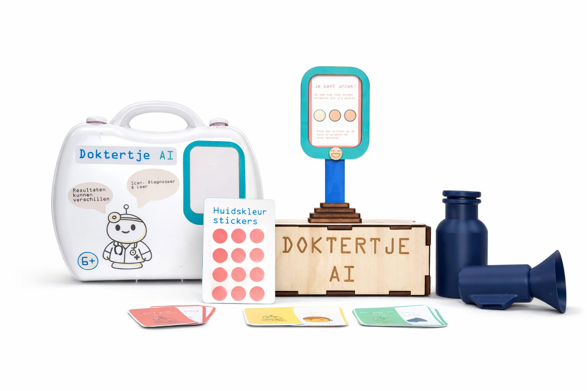
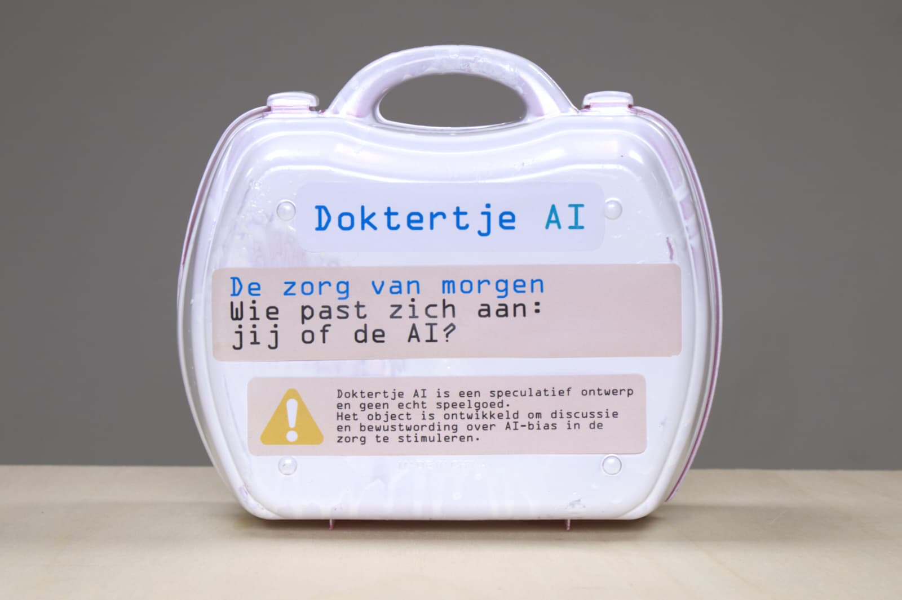

GAME DESIGN
Stringstar Escape
Een platformer gemaakt in Unity met een focus op eenvoudige gameplay en visuele stijl.

WEB DESIGN
BOLD Website
Een moderne website voor studievereniging BOLD, ontworpen en ontwikkeld met de focus op een dynamisch platform dat informatie samenbrengt in een consistente huisstijl.
Website bekijken →


DISCURSIVE DESIGN
Mycobond Society
Dit project onderzoekt hoe in de huidige samenleving wordt gesproken over sociale verbondenheid. We leven in een tijd waarin contact en relaties steeds zichtbaarder en meetbaarder zijn geworden. Via sociale media, netwerken en digitale platforms wordt verbondenheid vaak afgemeten aan hoeveel contact iemand heeft en hoe zichtbaar dat contact is. Wie weinig sociale interactie toont, kan al snel worden gezien als eenzaam of sociaal tekortschietend. Vanuit dit discours neem ik de positie in dat verbondenheid steeds vaker wordt beoordeeld aan de buitenkant, terwijl de innerlijke ervaring onderbelicht blijft.
Dit project onderzoekt hoe in de huidige samenleving wordt gesproken over sociale verbondenheid. Via sociale media wordt verbondenheid vaak afgemeten aan hoeveel contact iemand heeft en hoe zichtbaar dat contact is. Vanuit dit discours neem ik de positie in dat verbondenheid steeds vaker wordt beoordeeld aan de buitenkant, terwijl de innerlijke ervaring onderbelicht blijft.
Onderzoek laat zien dat sociale verbondenheid belangrijk is voor gezondheid en welzijn. De World Health Organization benadrukt dat sterke sociale relaties bijdragen aan een langer en gezonder leven, terwijl eenzaamheid en sociale isolatie juist risico's vormen voor zowel mentale als fysieke gezondheid1.
Tegelijkertijd ervaren veel mensen juist meer eenzaamheid, ondanks dat zij online sterk verbonden lijken. Volgens cijfers van Our World in Data voelt een groot deel van de wereldbevolking zich regelmatig eenzaam, met name jongeren2. Dit laat zien dat meer contact niet automatisch betekent dat mensen zich ook meer verbonden voelen.
Ook onderzoek van het Pew Research Center toont aan dat mensen hun sociale relaties vooral zien als bron van emotionele steun3. Vrienden, partners en familie zijn belangrijk om gevoelens te delen en steun te krijgen. Tegelijkertijd blijkt dat sociale media deze relaties zowel kunnen versterken als onder druk zetten, doordat vergelijking en zichtbaarheid zorgen voor extra sociale druk4.
Verbondenheid wordt hierdoor iets dat niet alleen gevoeld, maar ook getoond moet worden.
Binnen dit discours is weinig ruimte voor negatieve of ongemakkelijke kanten van relaties, zoals conflict, afstand of haat. Relaties worden vaak beoordeeld als "goed" of "slecht", waarbij spanningen snel als probleem worden gezien. Hierdoor ontstaat het idee dat verbondenheid altijd positief en wederzijds moet zijn, terwijl dit in werkelijkheid vaak complexer is.
Vanuit deze context is mijn worlding ontstaan. In deze wereld wordt sociale verbondenheid letterlijk zichtbaar via een schimmel / wortel netwerk dat tussen mensen groeit. Liefde, neutraliteit en haat krijgen elk een eigen vorm in het mycelium. Sommige verbindingen zijn sterk en voedend, andere zijn zwak, scheef of verstikkend. De schimmel heeft hierbij een eigen invloed en laat zien dat relaties niet volledig door mensen te sturen zijn.
Deze worlding maakt het dominante discours tastbaar. Door verbondenheid fysiek zichtbaar te maken, confronteert het project de gebruiker met vragen over privacy, sociale druk en controle. Het laat zien hoe de drang naar zichtbare verbondenheid kan leiden tot verlies van nuance en persoonlijke vrijheid. Zo nodigt mijn worlding uit om anders te kijken naar wat het betekent om verbonden te zijn.
1. World Health Organization. (2025, 30 juni). Social connection linked to improved health and reduced risk of early death. https://www.who.int/philippines/news/detail-global/30-06-2025-social-connection-linked-to-improved-heath-and-reduced-risk-of-early-death
2. Our World in Data. (2025). Loneliness and social connections. https://ourworldindata.org/social-connections-and-loneliness
3. Pew Research Center. (2025, 16 januari). Where men and women turn for emotional support and social connection. https://www.pewresearch.org/2025/01/16/where-men-and-women-turn-for-emotional-support-and-social-connection/
4. Pew Research Center. (2025, 22 april). Social media and teens' mental health. https://www.pewresearch.org/internet/2025/04/22/teens-social-media-and-mental-health/

SPECULATIVE DESIGN
Speculative Design
Een speculatief product voor de bio-medische zorg In opdracht van het Amphia Ziekenhuis met de volgende vraag:
Wat als kinderen opgroeien in een wereld waarin AI meebeslist over diagnoses?
Doktertje AI is een speelgoedset waarmee kinderen elkaar kunnen “scannen” en zo spelenderwijs ervaren hoe technologie tot een oordeel kom, en dat dat oordeel soms niet klopt. Het ontwerp zet aan tot de vraag: moeten we kinderen leren omgaan met gebrekkige systemen, of moeten we technologie zo ontwerpen dat ze iedereen eerlijk begrijpt?

